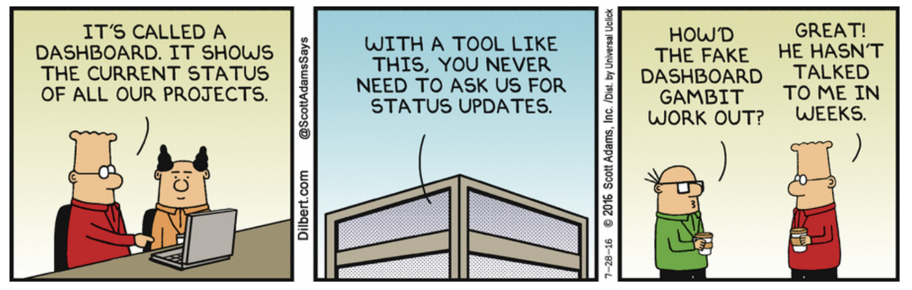
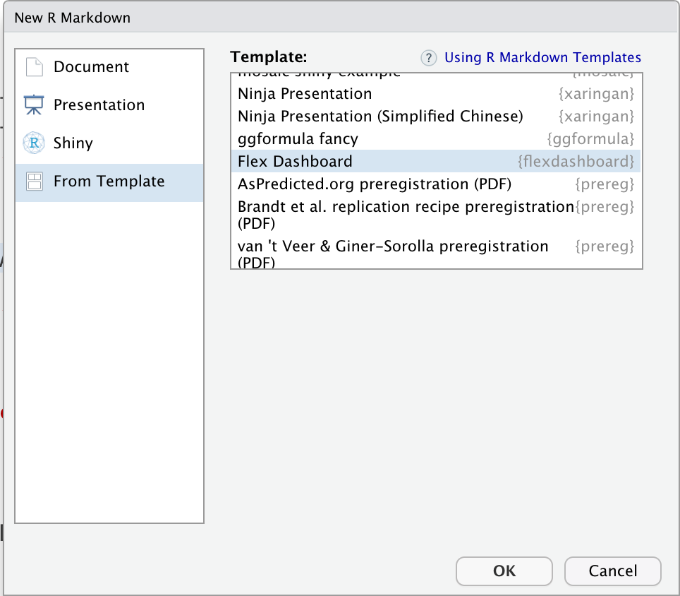

Dashboards Practical
|
Reporting mit R The R Bootcamp |

|

from https://dilbert.com/
Überblick
In diesem Practical übst du, (dynamische) Dashboards in Markdown zu erstellen. Genauer wirst du dieses Dashboard erstellen.
Am Ende des Practicals wirst du wissen wie man:
- Dashboard-Layouts bestimmt.
- Die einzelnen Komponenten mit Inhalt füllst.
- Ein Storyboard erstellst.
- Karten mit
leafletplottest. - Grafiken mit
plotlyaufpeppst.
Aufgaben
A - Setup
Öffne dein
TheRBootcampR Projekt. Es sollte die Ordner1_Dataund2_Codeenthalten. Stelle sicher, dass du alle Datensätze, welche imDatensätzeTab aufgelistet sind, in deinem1_DataOrdner hast.Öffne ein neues RMarkdown Skript und wähle das Template “Flex Dashboard” aus (siehe screenshot unten).

Speichere das neue Skript unter dem Namen
dashboards_practical.Rmdim2_CodeOrdner.Schreibe als Titel “Dashboards Practical” hinein.
B - Setup
- Lade die Pakete
tidyverse,plotly,leaflet,viridis,htmltools,lubridate,patchworkundflexdashboard(letzteres sollte, wenn du das richtige Template ausgewählt hast, bereits alslibrary()Befehl eingefügt sein) im Setup chunk.
# Lade Pakete
library(flexdashboard)
library(tidyverse)
library(plotly)
library(leaflet)
library(viridis)
library(htmltools)
library(patchwork)- Lade den
airbnbDatensatz mitread_csv()so wie du das in den bisherigen Practicals auch gemacht hast.
airbnb <- read_csv("XXX/XXX")C - Layout
Zur Erinnerung, du wirst dieses Dashboard erstellen. Öffne den Link am besten in einem separaten Tab in deinem Browser. Wir werden wärend dieses Practicals immer wieder darauf verweisen.
Schau dir das Dashboard genau an, um einen Eindruck zu kriegen, was du genau nachbauen sollst, wie das Layout aussieht, und welche Komponenten verwendet werden.
Setze zunächst das Seitenlayout des Dashboards auf. Verwende dazu zuerst Zeilen von Gleichheitszeichen
========(dies entspricht Titeln der ersten Stufe, also was du bisher mit einem#gekennzeichnet hast; siehe auch Template unten). Nenne die drei Seiten “Übersicht der Airbnbs in Berlin”, “Entwicklung über Zeit” und “Bewertungen der Airbnbs”
Titel der Seite 1
======================================================================Nun schaue dir das Dashboard nochmals an. Sind alle drei Seiten spalteinweise (die Defaultausrichtung in Dashboards) ausgerichtet?
Genau, nur die zweite Seite ist spaltenweise ausgerichtet. Die erste Seite ist zeilenweise ausgerichtet, und die dritte Seite ist ein Storyboard. Bei mehreren Seiten, kannst du jeweils nach dem Titel die Seitenausrichtung bestimmen, indem du für eine spalteinweise Ausrichtung
{data-orientation=columns}, für eine zeilenweise Ausrichtung{data-orientation=rows}und für ein Storyboard{.storyboard}nach dem Titel (aber vor den Gleichheitszeichen) schreibst. Füge die entsprechende Ausrichtung auf den drei Seiten ein.Nun beginnen wir mit dem Layout der einzelnen Seiten. Wir starten mit Seite 1. Du siehst, dass es zwei Zeilen gibt, eine mit den value Boxes, und eine mit der fancy Karte. Die Zeilen (oder Spalten, bei spaltenweisem Layout) werden mit Titel zweiter Ordnung (mit
##) definiert. Beiflexdashboarverwenden wir dazu eine Zeile Minuszeichen (siehe Template unten), dies ist jedoch nur eine Konvention. Füge zwei Zeilen mit den Namen “Allgemein” und “Berlin” ein.
Titel der Zeile 1
----------------------------------------------------------------------Wenn du das Dokument so knitten würdes, würden die beiden Zeilen gleich viel Platz erhalten. Die Karte soll jedoch mehr Platz erhalten. Füge dazu nach dem ersten Titel (aber vor der Zeile Minuszeichen) folgenden Code ein:
{data-height = 400}. Damit wird die Zeilenhöhe in Pixeln angegeben.Die obere Zeile mit den value Boxes, ist in drei Spalten unterteilt, eine für jede value Box. Verwende Titel dritter Ordnung um die Spalten mit den Namen “Superhosts”, “Allstar”, und “Preiswert” zu erstellen. Für diese Titel verwenden wir keine besonderen Zeichen, wie bei den anderen beiden Titeln, sondern wie gewohnt
###.Seite 1 ist vom Layout her fertig. Zeit Seite zwei vorzubereiten. Schaue sie dir dafür nochmals kurz an.
Wie du wahrscheinlich gesehen hast, sind es diesmal zwei Spalten. Überlege dir, wie du diese definieren würdest.
Genau, du kannst wie bei Aufgabe C6 Titel zweiter Ordnung hinzfügen. Füge die zwei Spalten mit den Titeln “Entwicklung über die Zeit” und “Erklärung” unter dem Titel der zweiten Seite hinzu (nach der Zeile mit den Gleichheitszeichen).
Wie auf Seite 1, musst du auch hier noch die Spalten anpassen. Dort hattest du mit
{data-height = 400}die Höhe einer Zeile festgelegt. Die Breite eine Spalte kann analog mit{data-width = XXX}festgelegt werden. Definiere, dass die erste Spalte 700 Pixel breit ist, und die zweite Spalte 300 Pixel breit ist.Nun fehlen nur noch die Titel der beiden Spalten. Verwende dazu Titel dritter Ordnung (
###) und nenne die linke Spalte “Entwicklung der Berliner Airbnbs seit 2009” und die rechte Spalte “Hintergründe”. Tipp: füge diese Namen jeweils unter dem Titel zweiter Ordnung, welcher die Spalten definiert, ein.So, nun fehlt nur noch das Layout der letzten Seite. Da es sich um ein Storyboard handelt, musst du keine Spalten oder Zeilen Spezifizieren. Du kannst also direkt zu den Titeln dritter Ordnung übergehen.
Um die drei Abschnitte des Storyboards zu erstellen, verwende wiederum Titel dritter Ordnung (
###). Erstelle drei Abschnitte mit den Namen “Gesamtrating”, “Sauberkeit”, und “Lage”.In den Abschnitten des Storyboards soll es jeweils einen Hauptteil (links), sowie rechts eine schmalere Spalte mit Kommentaren haben. Definiere die Breite der kleineren Kommentarspalte, indem du nach jedem der drei Titel, aber auf derselben Zeile,
{data-commentary-width=300}einfügst.Fast geschafft! Nur die Titel der Storyboardabschnitte sind noch etwas klein. Um sie zu vergrössern, musst du etwas HTML Syntax verwenden. Kopiere den untenstehenden Code und ersetze die Titel damit, und füge die Titelnamen von C15 in die
XXXdes Codes ein.
<span style="font-size: 20px;">XXX</span>D - Komponenten (ohne htmlwidgets)
- Nun haben wir das Layout fertiggestellt und können die Komponenten einfüllen. Wir beginnen mit den value Boxes auf Seite 1. Um die erste valueBox zu erstellen, verwende den untenstehenden Code in einem R chunk den du nach dem “Superhost” Titel einfügst. Da wir nicht den ganzen Code Schritt für Schritt durchgehen können, sind die einzelnen Abschnitte mit Kommentaren erklärt. Frage nach, falls etwas unklar ist!
# berechne die Anzahl Superhosts im airbnb Datensatz
n_superhosts <- sum(airbnb$Host_superhost)
# Erstelle valueBox
# Setze die oben berechnete Summe ein
valueBox(n_superhosts,
# Definiere "Superhost" als Titel. Der HTML code
# vergrössert die Schrift und setzt die Schriftfarbe
# auf weiss
caption = "<h3 style='color: white;'>Superhost</h3>",
# Wähle eine Medallie als Icon
icon = "fa-medal",
# Definiere die Färbung der valueBox (hier das Airbnb grün)
color = "#008489")- Für die Allstar
valueBoxmusst du zuerst die Anzahl Airbnbs, welche überall Topratings haben berechnen. Verwende dazu den untenstehenden Code in einem R chunk, diesmal unterhalb des “Allstar” Titels. Wiederum ist hier leider nicht genügend Zeit vorhanden, den Code im Detail durchzugehen. Wenn du mehr darüber lernen möchtest, bieten wir im Kurs Explorative Datenanalyse mit R eine Einführung.
# Berechne die Anzahl allstars, mit ausschliesslich top
# ratings
allstar <- airbnb %>% # Rating_gesamt ist von 0 bis 100 -> reskaliere auf 0 bis 10
mutate(Rating_gesamt = Rating_gesamt/10) %>% # Behalte ausschliessliche Spalten mit Ratings
select(starts_with("Rating")) %>% # Berechne die Mittelwerte jeder Zeile über alle Spalten
mutate(Ratings_m = rowMeans(.)) %>% # Behalte nur die Zeilen mit Mittelwert 10 (Maximum Rating)
filter(Ratings_m == 10) %>% # Zähle die Anzahl verbliebener Zeilen
summarise(n())Verwende den
valueBoxCode von Aufgabe D1 als Template um die value Box der Anzahl Allstars zu erstellen. Ersetze dazun_superhostsdurchallstarund ändere das “Superhost” im caption Argument zu “Allstars”.Diese value Box sieht aber noch nicht ganz gleich aus wie im vorgegebenen Dashboard. Zum Einen ist die Farbe noch grün statt gold, zum Anderen ist das Icon noch falsch. Ändere zunächst die Farbe (das
colorArgument) von"#008489"zu"#f5d142".Nun ändere den Input zum
iconArgument von"fa-medal"zu"fa-gem". Dabei spezifiziert das “fa-”, dass das Icon aus der Font Awesome Sammlung stammt. “medal” und “gem” geben dann den Namen des Icons an.Nun zur dritten value Box, die die Anzahl preiswerter Airbnbs - definiert als weniger als 100 Euro pro Nacht - angibt. Berechne dazu zunächst die Anzahl mit dem untenstehenden Code in einem R chunk unterhalb des “Preiswert” Titels.
# Berechne die Anzahl preiswerter Airbnbs
preiswert <- sum(airbnb$Preis < 100)Verwende wiederum den
valueBoxCode von Aufgabe D1 als Template um nun die value Box zu erstellen. Ersetze dazun_superhostsdurchallstarund ersetze das “Superhost” durch “Preiswert”. Ändere ausserdem dasiconzu"fa-money-bill-wave"und die Farbe zu"#85a95d".So, das war es für den Moment für diese Seite; die interaktiven Grafiken erstellen wir weiter unten. Gehe im Code zur zweiten Seite. Dort werden wir den Text erstellen.
Schaue dir den Text in der rechten Spalte des Dashboards an. Versuche ihn mit deinen bisher erworbenen RMarkdown Kenntnissen selbst nachzubauen (du darfst copy-pasten um nicht alles abschreiben zu müssen).
Du kannst deinen Text mit dem untenstehenden Text, mit dem diese Spalte tatsächlich erstellt wurde, vergleichen. Hast du alles gleich gemacht? Wo hast du andere Lösungen gefunden?
**Airbnbs in Berlin**
Das erste Airbnb in Berlin öffnete 2009 im Stadtteil
[Pankow](https://de.wikipedia.org/wiki/Berlin-Pankow)
(siehe auch [Übersichtskarte](#page-1)). Von da an war ein
rascher Anstieg zu verzeichnen. Bereits 6 Jahre später gab
es in Berlin-Pankow alleine `r round(10**2.3)` Airbnbs.
Mittlerweile ist diese Zahl auf rund `r round(10**3.2 / 100) * 100` angestiegen.
Das teuerste heute verfügbare Airbnb kostet dabei `r max(airbnb$Preis)`
pro Nacht; für die meisten Leute nicht gerade ein Schnäppchen. Dabei
handelt es sich um ein `r airbnb$Unterkunftsart[max(airbnb$Preis)]`
im Stadtteil `r airbnb$Stadtteil[max(airbnb$Preis)]`.
Insgesammt wurden über die Jahre in Berlin `r
as.integer(sum(airbnb$host_anzahl))` Gäste in Airbnbs
empfangen.Das war es schon für diese Seite. Den Plot erstellen wir wiederum später. Gehe nun in deinem Dokument zur dritten Seite zum Titel “Gesamtrating” (Titel dritter Ordnung).
Erstelle unterhalb des Titels einen R chunk und füge den untenstehenden Code ein. Dieser erstellt die erste Grafik. Wiederum fehlt die Zeit für genaue Erklärungen, aber der Code ist gut Kommentiert, sodass du einen Eindruck der durchgeführten Aktionen erhalten solltest.
## Erstelle das Histogramm der Gesamtratings
# Wähle die Rating_gesamt Variable zum Plotten aus
pg1 <- ggplot(airbnb, aes(Rating_gesamt)) + # Erstelle ein Histogramm mit Balkenbreite 1
geom_histogram(binwidth = 1) + # Definiere die Achsenbeschriftungen
labs(x = "Gesamtrating", y = "Häufigkeit") + # Definiere den Range der x-Achse von 0 bis 100
coord_cartesian(xlim = c(0, 100)) + # Wähle ein Design für den Plot
theme_light() + # Vergrössere die Achsenbeschriftungen
theme(axis.title = element_text(size = 16), axis.text = element_text(size = 12))
## Erstelle das Streudiagramm für den Zusammenhang von Preis
## und Gesamtrating
# Wähle die Preis und Rating_gesamt Variablen zum Plotten aus
# und berechne den 10er Logarithmus von Preis
pg2 <- ggplot(airbnb, aes(x = log10(Preis), y = Rating_gesamt)) +
# Erstelle ein Streudiagramm, mit zu 25% transparenten
# Punkten
geom_point(alpha = 0.25) + # Definiere die Achsenbeschriftungen mit Subskript für 10
labs(x = bquote("log"[10] * "(Preis)"), y = "Gesamtrating") +
# Definiere den Range der y-Achse von 0 bis 100
coord_cartesian(ylim = c(0, 100)) + # Wähle ein Design für den Plot
theme_light() + # Vergrössere die Achsenbeschriftungen
theme(axis.title = element_text(size = 16), axis.text = element_text(size = 12))
## Plotte die Grafiken untereinander
pg1/pg2- Für die rechte Seite (die Kommentarspalte), musst du unterhalb des eben in D12 erstellten Plot Codes, ausserhalb des R chunks, drei Sterne nacheinander einfügen. So wird die Kommentarspalte erstellt (siehe Template).
INHALT LINKE SPALTE
***
INHALT RECHTE (KOMMENTAR-) SPALTE
Füge nun eine fettgedruckten Titel (mit
**TITEL**) unterhalb der eben eingefügten drei Sterne ein. Wähle als Titel “Mittlere Gesamtratings”.Erstelle nun den
gaugezu den Gesamtratings in dem du direkt unter dem eben erstellten Titel einen R chunk mit untenstehendem Code einfügst.
# Berechne mittleres Gesamtrating und Runde auf eine Kommastelle
gesamtrating <- round(mean(airbnb$Rating_gesamt, na.rm = TRUE), 1)
# Estelle den gauge mit dem gesamtrating Objekt
gauge(gesamtrating,
# Setze Minimu und Maximum Werte
min = 0, max = 100,
# Definiere Farbwerte mit gaugeSectors
gaugeSectors(
# Grün, wenn der Wert zwischen 80 und 100 liegt
success = c(80, 100),
# Orange, wenn der Wert zwischen 50 un 79 liegt
warning = c(50, 79),
# Rot, wenn der Wert zwischen 0 und 49 liegt
danger = c(0, 49)
))- Füge nun unterhalb des R chunks, der den
gaugedefiniert, den folgenden Text ein (der Teil<p style="font-size: 20px;">ist HTML Syntax, mit der die Textgrösse etwas vergrössert wird; mit</p>wird die Syntax abgeschlossen):
<p style="font-size: 20px;">Die Berliner Airbnbs scheinen allgemein in
einem sehr guten Zustand zu sein. Zumindest lassen die hohen Gesamtratings
darauf schliessen. Allerdings scheint es kaum einen Zusammenhang mit dem
Preis zu geben, worüber sich Sparfüchse freuen dürften.</p>- Die anderen zwei Seiten des Storyboard kannst du später bei den Challenges selber nachbauen. Zuerst schauen wir uns nun die beiden fancy Plots auf Seite 1 und 2 an.
E - leaflet
- Wir starten mit der Karte auf Seite 1. Gehe in deinem Skript zur Syntax, die die Zeile “Berlin” erstellt, also direkt unterhalb dieses Teiles:
Berlin
----------------------------------------------------------------------
HIER!
- leaflet bietet die Möglichkeit, sehr einfach interaktive Karten zu erstellen. Erstelle einen neuen R chunk mit dem folgenden Code:
# Definiere Datensatz
airbnb %>% # Erstelle Plot
leaflet() %>% # Setze Anfangskoordinaten und Zoomwert
setView(lng = 13.40439, lat = 52.51128, zoom = 12) %>% # Zeichne Karte
addTiles()- Damit haben wir bereits eine Karte von Berlin erstellt. Um andere Städte auszuwählen müsste man lediglich die Längen- und Breitengradangaben in
setViewanpassen. Füge nun den folgenden Code unten hinzu (Achtung: ersetze dabeiaddTiles()in deinem Code mit dem untenstehenden Code), um die Airbnbs einzuzeichnen:
addTiles() %>% # Füge Marker hinzu
addCircleMarkers(lng = ~Längengrad, lat = ~Breitengrad, radius = 4,
stroke = FALSE, fillOpacity = 0.5)- Die Farbe stimmt noch nicht. Dazu müssen wir zunächst eine Farbpalette vorbereiten. Füge dazu den untenstehenden Code im R chunk, aber oberhalb des bereits bestehenden Codes ein:
## Farbpalette vorbereiten Anzahl Stadtteile
n_stadtteile <- length(unique(airbnb$Stadtteil))
# Definiere n_stadtteile verschiedene Farben aus der viridis
# palette
farben <- viridis(n_stadtteile)
# Erstelle Farbpalette
pal <- colorFactor(farben, domain = unique(airbnb$Stadtteil))Um nun die Marker entsprechend einzufärben, füge in der
addCircleMarkers()Funktion, folgendes Argument ein:color = ~pal(Stadtteil).Jetzt sieht es schon langsam besser aus. Es fehlen noch die Popup Fenster. Dazu müssen wir zuerst die anzuzeigenden Labels definieren. Wir können allerdings nur ein einziges Label pro Airbnb einfügen. deshalb müssen wir etwas tricksen und mehrere Labels mit der Hilfe von etwas HTML so zusammenfügen, dass es im Dashboard wie mehrere Labels aussieht. Füge dazu den untenstehenden Code direkt zwischen
airbnbundleaflet()ein:
mutate(
superhost = case_when(isTRUE(.$Host_superhost) ~ "Ja",
TRUE ~ "Nein"),
info = paste0("Unterkunft: <b>", Unterkunftsart,
"</b><br>Schlafzimmer: <b>", Schlafzimme,
"</b><br>Superhost: <b>", superhost,
"</b><br>Preis pro Nacht: <b>", Preis, "€</b>")
) %>% Nun da die Labels erstellt sind, kannst du wiederum in der
addCircleMarkers()Funktion die folgenden zwei Argumente und Inputs hinzufügen:label = ~lapply(info, HTML)undlabelOptions = labelOptions(textsize = "15px").Fast geschafft! Jetzt fehlt nur noch die Legende. Füge diese hinzu, indem du den folgenden Code am bestehenden Code anhängst, wobei die Pipe (
%>%) auf derselben Zeile sein muss, wie die schliessende Klammer)der letzten Funktion (addCircleMarkers()):
%>%
# Füge Legende hinzu
addLegend(pal = pal, values = ~Stadtteil, opacity = 1)- Nun ist deine Karte wahrscheinlich noch etwas zu klein. Spiele etwas mit den Plotimensionen (
fig.heightundfig.widthin den Chunkoptionen) herum, bis du etwas passendes gefunden hast.
F - plotly
- Zeit den letzten Plot hinzuzufügen: Den Häufigkeitsverlauf auf Seite w. Gehe in deinem Skript zur Syntax, die den Titel “Entwicklung der Berliner Airbnbs seit 2009” in der linken Spalte erstellt:
### Entwicklung der Berliner Airbnbs seit 2009
HIER!
- Füge einen R chunk mit dem untenstehenden Code ein (Datenvorbereitung und Plotting ist nicht Teil dieses Kurses, aber wenn du Fragen zum Code hast helfen wir gerne weiter!).
### Plot zum Verlauf über die Zeit
# Passe den Datensatz an
Verlauf <- airbnb %>% # Gruppiere über Stadtteile
group_by(Stadtteil) %>% # Ordne Zeilen Aufsteigend nach Erstellungsdatum
arrange(Erstellungsdatum) %>% # Erstelle neue Variablen Datum und Kumulativ, letztere als
# 10er Logarithmus der Anzahl Airbnbs
mutate(Datum = Erstellungsdatum, Kumulativ = log10(1:n())) %>%
# Gruppiere über Stadtteil, Datum, und Kumulativ Variablen
group_by(Stadtteil, Datum, Kumulativ) %>% # Berechne deskriptive Statistiken und erstelle Variable mit
# Text für Popup Felder
summarise(m_preis = mean(Preis, na.rm = TRUE), superhosts = sum(Host_superhost,
na.rm = TRUE), m_rating = mean(Rating_gesamt, na.rm = TRUE),
hover_text = paste0("Mittlerer Preis: <b>", m_preis, "</b><br>Superhosts: <b>",
superhosts, "</b><br>Mittleres Gesamtrating: <b>", m_rating,
"</b>")) %>% # Erstelle den Plot mit Datum auf der x- und Kumulativ auf
# der y-Achse Separate und eingefärbte Linien pro Stadtteil
ggplot(aes(x = Datum, y = Kumulativ, col = Stadtteil)) + # Zeichne Punkte ein; das text Argument wird später von
# ggplotly() verwendet
geom_point(aes(text = hover_text)) + # Zeichne Linien
geom_line(show.legend = FALSE) + # Definiere Farbwerte; Objekt farben stammt noch von der
# Karte auf p.1
scale_color_manual(values = farben) + # Definiere y-Achsenbeschriftung; verwendet HTML wegen plotly
ylab("log<sub>10</sub>(Kumulative Häufigkeit)") + # Definiere Plot design
theme_light()Der Code von Aufgabe F2 erstellt einen statischen Plot. Dieses
ggplotObjekt kann jetzt ganz einfach anggplotly(), einerplotlyFunktion weitergegeben werden, um den Plot interaktiv zu gestalten. Dazu musst du nurggplotly(Verlauf)am Ende des R chunks hinzufügen. Fertig…Bzw. fast fertig. Passe die Dimensionen des Plots so an, dass die Spalte möglichst ausgefüllt wird. Dazu musst du ein paar Werte ausprobieren…
X - Challenges
Auf Seite 3 sind noch zwei Seiten des Storyboards leer. Fülle diese mit Inhalt; du kannst dich dabei and das vorgegebene Dashboard halten, oder eigene Dinge ausprobieren.
Schaue dir die Popupfenster der beiden Plots auf den Seiten 1 und 2 an. Gibt es zusätzliche Dinge die du angezeigt haben möchtest? Versuche diese zu implementieren.
leafletermöglicht es auch Icons anstatt nur Punkten zu plotten. Eine Anleitung findest du hier. Versuche, Marker mit unterschiedlichen Icons zu verwenden, zum Beispiel könntest du ein bestimmtes Icon für Superhosts verwenden und ein weiteres für ganz schlechte Airbnbs, und ein weiteres für den Rest.
Datensatz
| Datei | Zeilen | Spalten |
|---|---|---|
| gap.csv | 1692 | 6 |
Funktionen
Paket
| Paket | Installation |
|---|---|
tidyverse |
install.packages("tidyverse") |
flexdashboard |
install.packages("flexdashboard") |
plotly |
install.packages("plotly") |
leaflet |
install.packages("leaflet") |
viridis |
install.packages("viridis") |
htmltools |
install.packages("htmltools") |
patchwork |
install.packages("patchwork") |
Materialien
- Eine gutes flexdashboard Tutorial.
- R leaflet Dokumentation und Einführung.
- R plotly Dokumentation und Einführung.
- HTML Dokumentation und Einführung.